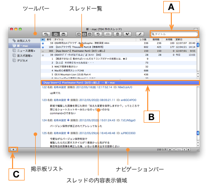

図解 ブラウザウインドウ
図解 ブラウザウインドウ
BathyScapheのブラウザウインドウについて説明します。

構成
- ツールバー
- BathyScaphe の基本的な操作はここで行います。
- 掲示板リスト
- 自分の好きなように、カテゴリと掲示板を組み合わせて作成します。
- スレッド一覧
- 選択した掲示板のスレッドを一覧表示します。
- スレッドの内容表示領域
- 選択したスレッドの内容を表示します。
- ナビゲーションバー
- レス移動ボタンを使って、スレッドの中を移動します。また、作業の進行状況もここに表示されます。
細部の説明
- 検索ボックス(A)
- スレッド一覧からタイトルによる絞り込みを行います。
- スレッドタイトルバー（B）
- 現在表示しているスレッドのタイトルがここに表示されます。
- 追加（＋）ボタン（C）
- 掲示板リストに掲示板を追加するためのダイアログを表示します。